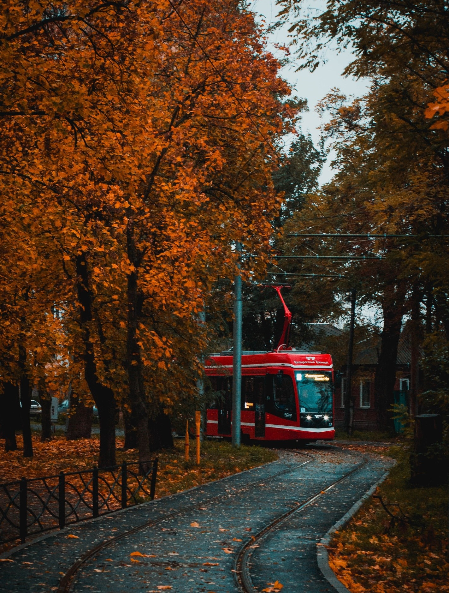

Таганрог
Чем заняться
Где поесть
Полезная информация
Рандом
Таганрог
IT-СТОЛИЦА РОССИИ
Площадь
95 км²
Кол-во жителей
243 тыс. чел
Погода
О городе
Таганро́г — город в Ростовской области России. Порт на берегу Таганрогского залива Азовского моря. Образует городской округ город Таганрог.
Является самым западным городом области. Входит в список исторических поселений России. Основан Петром I в 1698 году.

Нужно посетить
Смотреть все ->
Достопримечательности
Домик Чехова
Достопримечательности
Самбекские высоты
Достопримечательности
Памятник Петру I
Достопримечательности
Приморский парк
Наполнить пузо
Смотреть все ->
Ресторан
Дон Марио
Паб
Guzzler
Ресторан
Горский
Где отдохнуть
Смотреть все ->
Гостиница
Таганрог
Парк-отель
Star Crystal
Парк-отель
Бристоль
Отель и Спа
Гринвич-Парк